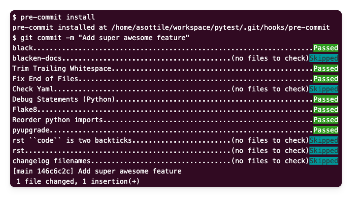
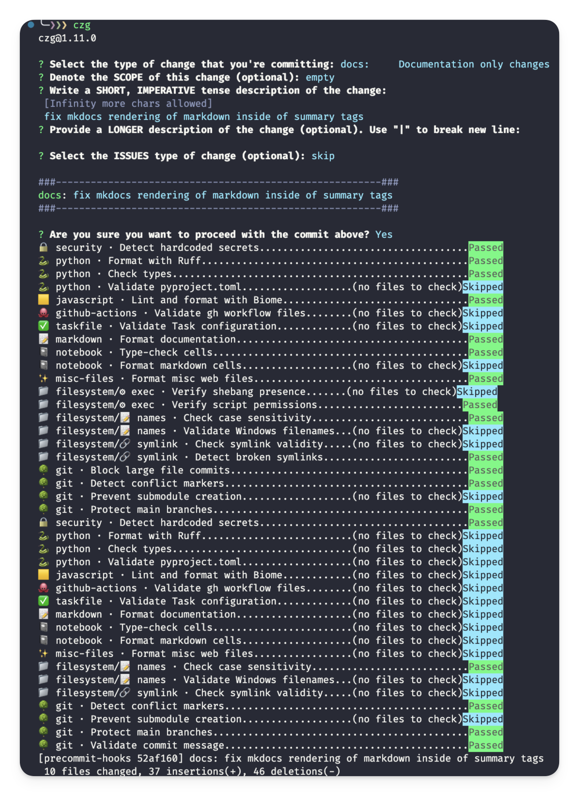

Pre-commit Hooks Collection

What are Git hooks?
Git hooks are scripts that run automatically at some stage in the git-lifecycle. Most commonly, pre-commit hooks are used, running before a commit goes through. They act as a first line of defense for code quality by:
- Catching formatting issues
- Finding potential security risks
- Validating configurations
- Running quick tests
- Enforcing team standards
Why use pre-commit?
Pre-commit is a framework that makes these Git hooks:
- Easy to share - Hooks are defined in a single YAML file
- Language-agnostic - Works with Python, JavaScript, and more
- Fast - Only runs on staged files and are much quicker than CI/CD
- Forgettable - Team members don't need to memorize QA tools; hooks run automatically
- Extendable - Large ecosystem of ready-to-use hooks
Pre-commit helps maintain code quality without slowing down development. While CI/CD pipelines might take minutes to run, pre-commit hooks provide instant feedback right when you commit. Despite the name, Pre-commit can install hooks at any stage (ex: Use a pre-push hook as a slightly more time-intensive pre-commit and push multiple commits at once.)
Common Use Cases
Pre-commit can be as strict as you want depending on your project's quality-time tradeoff. Here are cases where commit-level checks make more sense than pull-request level:
- Linting/formatting code and data files
- Re-building code or documentation
- Making database migrations
- Preventing secrets or large files from being committed
- Requiring commit messages to follow a standard (Like Commitizen)
- Running fast tests
Alternatives (Husky)
Husky is an alternative to pre-commit that's primarily designed for the NodeJS ecosystem. To my knowledge, while both tools handle Git hooks effectively, pre-commit offers broader multi-language support and has become standard in the Python community.
Installation
- The repository comes with a
.pre-commit-config.yamlfile already configured - Install the hooks with:
pre-commit install
You'll see hooks run automatically on every commit: 
Useful Commands:
# Update hooks to their latest versions
pre-commit autoupdate
# Reinstall hooks (needed after config changes)
pre-commit install
# Test hooks without committing
pre-commit run --all-files
Hooks
This collection prioritizes best-in-class tools without redundancy. Rather than using multiple overlapping tools, we've selected the most effective option for each task. For example:
- Python linting uses only Ruff instead of multiple separate linters
- JSON/YAML/TOML validation uses specialized schema validators
- Security scanning uses a single comprehensive tool
01 🔒 Security
GitLeaks is a fast, lightweight scanner that prevents secrets (passwords, API keys, tokens) from being committed to your repository.
- repo: https://github.com/gitleaks/gitleaks
rev: v8.22.1
hooks:
- id: gitleaks
name: "🔒 security · Detect hardcoded secrets"
Alternatives to GitLeaks (TruffleHog)
TruffleHog offers more comprehensive and continuous security scanning across a variety of platforms (not just files). However, it requires more setup time and resources than GitLeaks. Consider TruffleHog for expansive projects with strict security requirements.
02 🔍 Code Quality
This section covers tools for code formatting, linting, type checking, and schema validation across different languages and file types. Best-in-class tools were chosen, avoiding redundant functionality. I opted for remote hook downloads over local commands to make the file more portable and self-updating.
🐍 python
Ruff is a fast, comprehensive Python formatter and linter that replaces multiple traditional tools (Black, Flake8, isort, pyupgrade, bandit, pydoclint, mccabe complexity, and more.) While it's not yet at 100% parity with all these tools, its speed and broad coverage make it an excellent choice as this project's only Python linter/formatter:
- repo: https://github.com/astral-sh/ruff-pre-commit
rev: v0.8.6
hooks:
- id: ruff-format
name: "🐍 python · Format with Ruff"
- repo: https://github.com/pre-commit/mirrors-mypy
rev: "v1.14.1"
hooks:
- id: mypy
name: "🐍 python · Check types"
- repo: https://github.com/abravalheri/validate-pyproject
rev: v0.23
hooks:
- id: validate-pyproject
name: "🐍 python · Validate pyproject.toml"
additional_dependencies: ["validate-pyproject-schema-store[all]"]
Alternatives to Ruff (Too Many to Name)

Before Ruff, a typical Python project might use several separate tools:
- Black for code formatting
- isort for import sorting
- Flake8 for style enforcement
- Pylint for code analysis
- Bandit for security checks
- pyupgrade for modernizing syntax
- pydocstyle for docstring checking
- Many more... 😵💫
While these tools are battle-tested and highly configurable, using Ruff provides several advantages:
- Speed: Ruff is 10-100x faster as it's written in Rust
- Simplicity: Single configuration file and consistent interface
- Active Development: Rapidly adding features and reaching feature parity
- Modern Defaults: Better handling of new Python features
Consider using individual tools if you need specific features not yet supported by Ruff or have complex existing configurations you need to maintain.
While Ruff does many things, type checking it does not... yet.
MyPy handles Python type checking:
- repo: https://github.com/pre-commit/mirrors-mypy
hooks:
- id: mypy
Alternatives to MyPy (Pyright)
Microsoft's Pyright is a faster and more featureful alternative to MyPy. While it's the preferred choice for type checking, there isn't currently a maintained pre-commit hook available. Consider using Pyright through its Git hook or as a local tool until a pre-commit hook is developed.
🟨 JavaScript & Web Tools
Biome is a modern, fast formatter and linter for JS/TS ecosystems (JS[X], TS[X], JSON[C], CSS, GraphQL). It provides better defaults than ESLint and comes with a helpful VSCode Extension:
- repo: https://github.com/biomejs/pre-commit
rev: "v0.6.1"
hooks:
- id: biome-ci
name: "🟨 javascript · Lint and format with Biome"
additional_dependencies: ["@biomejs/biome@1.9.4"]
Alternatives to Biome (ESLint & Prettier)
ESLint and Prettier are more established alternatives with broader plugin ecosystems. While Prettier supports many file types, it can be notably slow, sometimes produces unexpected formatting, and sometimes breaks code (which I find annoying). Since this is primarily a Python-focused project template and Biome handles our JavaScript needs efficiently, we prefer it over the traditional ESLint/Prettier setup. Consider ESLint and Prettier if you need plugins, support for specific JS frameworks, or formatting for languages unsupported elsewhere. (More linters here as well)
✅ Data & Config Validation
check-jsonschema validates various configuration files using JSON Schema. It supports JSON, YAML, and TOML files, and includes specialized validators like the TaskFile and GitHub Actions checker:
- repo: https://github.com/python-jsonschema/check-jsonschema
rev: 0.30.0
hooks:
- id: check-github-workflows
name: "🐙 github-actions · Validate gh workflow files"
args: ["--verbose"]
- id: check-taskfile
name: "✅ taskfile · Validate Task configuration"
Additional json schema available on the Schema Store
validate-pyproject specifically handles pyproject.toml validation. In the future, I may have check-jsonschema do this as well.
- repo: https://github.com/abravalheri/validate-pyproject
rev: v0.23
hooks:
- id: validate-pyproject
name: "🐍 python · Validate pyproject.toml"
additional_dependencies: ["validate-pyproject-schema-store[all]"]
📝 Markdown
mdformat for Markdown formatting with additional plugins for GitHub-Flavored Markdown, Ruff-style code formatting, and frontmatter support:
- repo: https://github.com/hukkin/mdformat
rev: 0.7.21
hooks:
- id: mdformat
name: "📝 markdown · Format documentation"
additional_dependencies:
- mdformat-gfm # GitHub-Flavored Markdown support
- mdformat-ruff # Python code formatting
- mdformat-frontmatter # YAML frontmatter support
- ruff # Required for mdformat-ruff
📓 Notebooks
nbQA for Jupyter notebook quality assurance, allowing us to use our standard Python tools on notebooks:
- repo: https://github.com/nbQA-dev/nbQA
rev: 1.9.1
hooks:
- id: nbqa-mypy
name: "📓 notebook · Type-check cells"
- id: nbqa
entry: nbqa mdformat
name: "📓 notebook · Format markdown cells"
args: ["--nbqa-md"]
types: [jupyter]
additional_dependencies: # Same dependencies as mdformat
- mdformat
- mdformat-gfm
- mdformat-ruff
- mdformat-frontmatter
- ruff
ruff supports notebooks by default
Ruff has built-in support for Jupyter Notebooks, so this has been excluded from nbQA since it would be redundant. nbQA has nbqa-ruff-format and nbqa-ruff-check hooks, but these appear to be redundant.
✨ Additional File Types
Prettier handles formatting for various file types not covered by other tools (HTML, CSS, YAML, etc.). While it can be slow and sometimes produces code-breaking formatting, it remains the standard for these file types:
- repo: https://github.com/pre-commit/mirrors-prettier
rev: v4.0.0-alpha.8
hooks:
- id: prettier
name: "✨ misc-files · Format misc web files"
types_or: [yaml, html, scss]
additional_dependencies:
- prettier@3.4.2
Future Improvements
I might replace Prettier with more focused tools in the future (Perhaps HTMLHint for HTML validation but it's hardly a linter.)
However, this would require managing multiple tools and dependencies, so I'm sticking with Prettier for now.
My disatisfaction with prettier is humorously shared by pre-commit, as they themselves no longer support the prettier hook because "prettier made some changes that breaks plugins entirely"
🛠️ Local Tools
For using tools without hooks, you can also run a local command:
- repo: local
hooks:
- id: make-lint
name: Run 'make lint'
entry: make
args: ["lint"]
language: system
Note: If you're using uv, they also have pre-commits available.
03 📁 Filesystem
These hooks help maintain repository hygiene by preventing common file-related issues:
- repo: https://github.com/pre-commit/pre-commit-hooks
rev: v5.0.0
hooks:
- id: check-executables-have-shebangs
name: "📁 filesystem/⚙️ exec · Verify shebang presence"
- id: check-shebang-scripts-are-executable
name: "📁 filesystem/⚙️ exec · Verify script permissions"
- id: check-case-conflict
name: "📁 filesystem/📝 names · Check case sensitivity"
- id: check-illegal-windows-names
name: "📁 filesystem/📝 names · Validate Windows filenames"
- id: check-symlinks
name: "📁 filesystem/🔗 symlink · Check symlink validity"
- id: destroyed-symlinks
name: "📁 filesystem/🔗 symlink · Detect broken symlinks"
# ... More Below ...
check-added-large-files- Prevents committing files larger than 8000KB (Git Large File Storage (LFS) or Data Version Control (DVC) should instead be used)check-case-conflict- Prevents issues on case-insensitive filesystems (Windows/MacOS)check-symlinks&destroyed-symlinks- Maintains symlink integritycheck-executables-have-shebangs- Ensures scripts are properly configuredcheck-illegal-windows-names- Check for files that cannot be created on Windows.
04 🌳 Git Quality
Branch Protection
- repo: https://github.com/pre-commit/pre-commit-hooks
rev: v5.0.0
hooks:
# ... More Above ...
- id: check-merge-conflict
name: "🌳 git · Detect conflict markers"
- id: forbid-new-submodules
name: "🌳 git · Prevent submodule creation"
- id: no-commit-to-branch
name: "🌳 git · Protect main branches"
args: ["--branch", "main", "--branch", "master"]
- id: check-added-large-files
name: "🌳 git · Block large file commits"
args: ['--maxkb=1000']
forbid-new-submodules- Prevent addition of new git submodules. (I'm mixed on this one since I think this is a confusing paradigm but don't know of better alternatives.)check-merge-conflict- Prevents committing unresolved merge conflictsno-commit-to-branch- Protects main branches from direct commits (GitHub branch protections are for enterprise members only (sad))
For the best experience:
- Use
cz commitinstead ofgit commit - Consider czg for a better implementation of the
czcli (I'm personally a fan of the AI generated commits it has.)
🗒️ Commit Message Standards
Commitizen enforces standardized commit messages that enable automatic changelog generation and semantic versioning
Additionally, I add cz-conventional-gitmoji, a third-party prompt template that combines the gitmoji and conventional commit standards. (More templates here)
- repo: https://github.com/commitizen-tools/commitizen
rev: v4.1.0
hooks:
- id: commitizen
name: "🌳 git · Validate commit message"
stages: [commit-msg]
Alternatives to Commitizen (Commitlint)
commitlint is a similar project to commitizen. Many articles claim that the difference between the two are that commitizen is more of a tool to generate these fancy commits while commitlint is meant to lint the commits. However, considering cz check is a thing, I'm confused what the difference is. The tools can be used together. Seems like commitizen has better python support than commitlint. Projects equally popular. More research to be done on the differences!
05 🧪 Testing
# TODO After completing `tests/`
# - repo: local
# hooks:
# - id: fast-tests
# name: Run Fast Tests
# entry: pytest
# language: system
# types: [python]
# args: [
# "tests/unit", # Only run unit tests
# "-m", "not slow", # Skip slow-marked tests
# "--quiet"
# ]
# pass_filenames: false
Conclusion
Putting all these together, we have the overall .pre-commit-config.yaml file:
exclude: |
(?x)^(
.*\{\{.*\}\}.*| # Exclude any files with cookiecutter variables
docs/site/.*| # Exclude mkdocs compiled files
\.history/.*| # Exclude history files
.*cache.*/.*| # Exclude cache directories
.*venv.*/.*| # Exclude virtual environment directories
)$
fail_fast: true
default_install_hook_types:
- pre-commit
- commit-msg
repos:
# ---------------------------------------------------------------------------- #
# 🔄 Pre-Commit Hooks #
# ---------------------------------------------------------------------------- #
# ----------------------------- 🔒 Security Tools ---------------------------- #
- repo: https://github.com/gitleaks/gitleaks
rev: v8.22.1
hooks:
- id: gitleaks
name: "🔒 security · Detect hardcoded secrets"
# --------------------------- 🔍 Code Quality Tools -------------------------- #
### Python Tools ###
- repo: https://github.com/astral-sh/ruff-pre-commit
rev: v0.8.6
hooks:
# - id: ruff
# args: [ --fix ]
- id: ruff-format
name: "🐍 python · Format with Ruff"
- repo: https://github.com/pre-commit/mirrors-mypy
rev: "v1.14.1"
hooks:
- id: mypy
name: "🐍 python · Check types"
- repo: https://github.com/abravalheri/validate-pyproject
rev: v0.23
hooks:
- id: validate-pyproject
name: "🐍 python · Validate pyproject.toml"
additional_dependencies: ["validate-pyproject-schema-store[all]"]
### Javascript & Web Tools ###
- repo: https://github.com/biomejs/pre-commit
rev: "v0.6.1"
hooks:
- id: biome-ci
name: "🟨 javascript · Lint and format with Biome"
additional_dependencies: ["@biomejs/biome@1.9.4"]
### Data & Config Validation ###
- repo: https://github.com/python-jsonschema/check-jsonschema
rev: 0.30.0
hooks:
- id: check-github-workflows
name: "🐙 github-actions · Validate gh workflow files"
args: ["--verbose"]
- id: check-taskfile
name: "✅ taskfile · Validate Task configuration"
### Markdown ###
- repo: https://github.com/hukkin/mdformat
rev: 0.7.21
hooks:
- id: mdformat
name: "📝 markdown · Format documentation"
additional_dependencies:
- mdformat-gfm
- mdformat-ruff
- mdformat-frontmatter
- ruff
### Notebooks ###
- repo: https://github.com/nbQA-dev/nbQA
rev: 1.9.1
hooks:
- id: nbqa-mypy
name: "📓 notebook · Type-check cells"
- id: nbqa
entry: nbqa mdformat
name: "📓 notebook · Format markdown cells"
args: ["--nbqa-md"]
types: [jupyter]
additional_dependencies:
- mdformat
- mdformat-gfm
- mdformat-ruff
- mdformat-frontmatter
- ruff
### Additional File Types ###
- repo: https://github.com/pre-commit/mirrors-prettier
rev: v4.0.0-alpha.8
hooks:
- id: prettier
name: "✨ misc-files · Format misc web files"
types_or: [yaml, html, scss]
additional_dependencies:
- prettier@3.4.2
# ---------------------------- 📁 Filesystem Tools --------------------------- #
- repo: https://github.com/pre-commit/pre-commit-hooks
rev: v5.0.0
hooks:
# Filesystem Checks
- id: check-executables-have-shebangs
name: "📁 filesystem/⚙️ exec · Verify shebang presence"
- id: check-shebang-scripts-are-executable
name: "📁 filesystem/⚙️ exec · Verify script permissions"
- id: check-case-conflict
name: "📁 filesystem/📝 names · Check case sensitivity"
- id: check-illegal-windows-names
name: "📁 filesystem/📝 names · Validate Windows filenames"
- id: check-symlinks
name: "📁 filesystem/🔗 symlink · Check symlink validity"
- id: destroyed-symlinks
name: "📁 filesystem/🔗 symlink · Detect broken symlinks"
# ------------------------------- 🌳 Git Tools ------------------------------- #
- id: check-merge-conflict
name: "🌳 git · Detect conflict markers"
- id: forbid-new-submodules
name: "🌳 git · Prevent submodule creation"
- id: no-commit-to-branch
name: "🌳 git · Protect main branches"
args: ["--branch", "main", "--branch", "master"]
- id: check-added-large-files
name: "🌳 git · Block large file commits"
args: ["--maxkb=1000"]
# ------------------------------ 🛠️ Local Tools ----------------------------- #
# - repo: local
# hooks:
# - id: make-lint
# name: Run 'make lint'
# entry: make
# args: ["lint"]
# language: system
# ---------------------------------------------------------------------------- #
# 📝 Commit Message Hooks #
# ---------------------------------------------------------------------------- #
# --------------------------- ✍️ Git Commit Quality -------------------------- #
# - repo: https://github.com/ljnsn/cz-conventional-gitmoji
# rev: 0.2.4
# hooks:
# - id: conventional-gitmoji
### Commit Message Standards ###
- repo: https://github.com/commitizen-tools/commitizen
rev: v4.1.0
hooks:
- id: commitizen
name: "🌳 git · Validate commit message"
stages: [commit-msg]
With each commit looking a bit like this:

Inspiration
Some inspo from this article